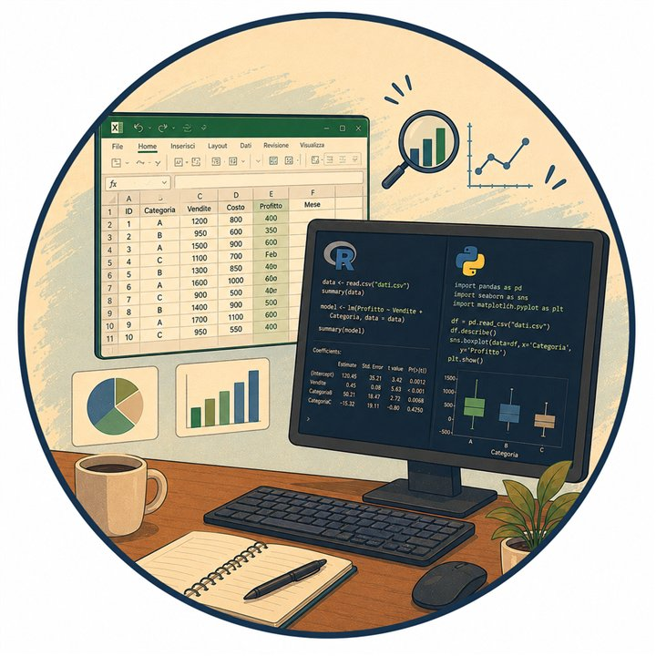
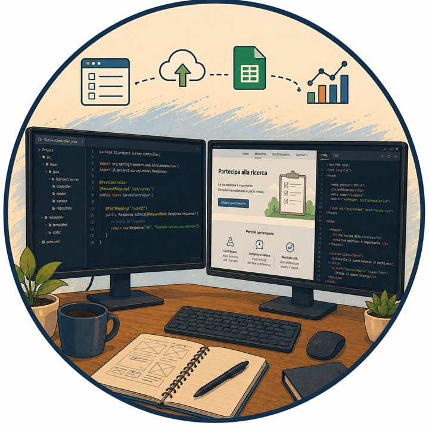

For whom
Researchers, students, institutions and professionals
Useful when an idea, survey, report or project needs to become clearer, stronger and easier to communicate.
Methodological support, consulting, training and data analysis for social research, universities, public bodies, professionals and organizations.
Useful when an idea, survey, report or project needs to become clearer, stronger and easier to communicate.
Interview guides, questionnaires, grids, summaries, reports, digital forms and practical recommendations.
The goal is to make research choices explicit: question, design, sample, tools, analysis, limits and interpretation.
A free experimental tool for a first methodological diagnosis of papers, theses, reports and research projects.
Support for strengthening coherence between research question, design, sample, tools, analysis and conclusions.

Support for organizing, reading and presenting quantitative, qualitative and mixed-methods data.

Lightweight pages, questionnaires and digital forms to collect information and produce structured outputs.
Short training paths and materials on methodology, evaluation, data analysis and critical use of artificial intelligence.
Write to me with your objective, current stage and the type of support you need. I can help identify the most suitable path.